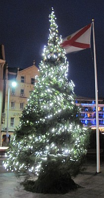

San Antonio, Texas,
U.S.A.
Lé 18 dé dézembre, 1976.
Moussieu l'Rédacteu,
Un vièr diton nouos dit qu'à forche dé truncer, Noué veint tréjous. Eh bein, lé temps s'pâsse si vite à m'suthe qué nou vieillit qué l'bieau jour dé Noué pathaît arriver bein pus vite touos l's ans tch'i' n'faîsait quand nou 'tait mousse et qu'nou s'attendait aver un p'tit présent d'Papa Noué quand i' d'scendait par la cheunm'née. Il en apportait tréjous iun ou deux, qué ch'fûsse jouette, codrette ou orange. Pour bein des pièches ch'tait l'seul présent tch'i' pouvaient lus attendre dé r'chéver, autrément qué l'prix d'l'êcole du Dînmanche, duthant l'année, et nou s'contentait atout bein p'tit dans chu temps-là.
Comme Noué est la fête dé la naîssance du Prînce dé la Paix, ch'est un bouan temps pour êprouver à l'êtablyi. Jé n'sommes pon en dgèrre en Améthique. Dgieu mèrci. Mais y'a dangi qu'ou r'quémenche dans cèrtains pays, et i' faut espéther qu'les troubl'yes en afrique s'en vont finni par dispathaître. Nou sait bein, sans doute, tch'i' n'faut pon s'attendre à vaie des gouvèrnéments démocratiques s'êtablyi à rempliaichi les cheins tchi s'en vont lus r'donner lus îndépendence, et i' y'a à craindre qué l's Afritchains es'sont p't-êt' pus malheutheux souos lus dictateurs tch'i' n'l'étaient souos l'gouvèrnément des bliancs, mais dépis qu'ch'est lus d'si d'vouler êt' maîtres siex ieux, i' faut lus donner la chance dé dêcouvri ch'là pour ieux-mêmes, et espéther l'contraithe pour lus bein-être.
Mais i' n'y'a pon longtemps qu'j'ai tchitté Jèrri, et j'sis pus întérêssi à penser à chein tchi s'y pâsse qué chein tchi s'pâsse en Afrique pour lé moment. Y tchait-i' acouo d'la plyie? S'en va-t-i' en tchaie tant qu'les fèrmièrs né pouôrront pon touanner en temps pour plianter d'bouanne heuthe? Ont-i' acouo trouvé un minnistre, pour rempliaichi Moussieu l'Canon Richardson à St. Ouën? S'en vont-i' sonner la clioche dé l'Églyise Parouaîssiale dépis méjeu la Sèrvelle jusqu'à mînniet l'jour dé Noué? Dans mes p'tits jours, man p'pèe et m's oncl'yes allaient prendre lus tou à sonner. I' m'sembliait tréjous qué ch'tait la vouaix d'l'Églyise annonçant la naîssance du seigneur des mille et mille fais pour qué tout l'monde ouîsse la bouanne nouvelle!
Tchi bieau jour qué ch'tait, l'jour dé Noué d'ma jannèche! La vraie jouaie d'vaie l'arrivée d'oncl'yes et tantes et p'tits couôsîns tchi v'naient pâsser Noué auve Papa et Manman, et tch'appaortaient tchiques présents pour mett' souos l'Arbre d'Noué. I' n'tait pon d'acat, l'Arbre d'Noué. J'allions, Papa et mé, coper un vèrt bouais sus tchique fossé, et nou lé m'ttait à sa pliaiche d'honneu dans la carre dé la tchuîsinne, où'est qu'nou mangeait l'dîner d'Noué.
Pour l'orner, nou faîsait du mus qu'nou pouvait. Nou copait d's êtailes et aut' objets atout des mios d'papi couleuthés ramâssés duthant l'année, et nou faichonnait des p'tites églyises en carton et nou pendait l's objets dans l'arbre atout du fi à couôtre. Et pis nou-s-alleunmait des p'tites chandelles dans des vèrres ordinnaithes couleuthés atout d'la rouge et bliue encre et nou les pendait dans l'arbre atout du fîn fi d'fé. Papa gardait s'n'yi d'ssus en cas d'dangi du feu.
Pour nous, mousses, lé dîner d'Noué 'tait tchiquechose à s'en litchi les babinnes toute l'année en r'vénant. I' nouos sembliait qu'touos les fricots 'taient rassembliés sus la tabl'ye. Et pis y'avait l'podîn d'Noué. Manman m'ttait des piéches dé siex-sou en argent d'dans, et ch'tait tchiquechose dé pouver en trouver ieune dans l'morcé qu'ou vouos donnait. Nou miâtchait bein l'podîn pour êt' seux dé n'l'avaler pon s'oulle 'tait là.
Tout l'monde restait à tabl'ye pour eune volée, et Papa nouos racontait d's histouaithes entouôrre ses viages à l'êtrangi quand i' navidgeait, Et pis i' nouos racontait des vielles crianches du temps d'Noué, comme la cheinne des vaques tchi s'agenouoillaient à mînniet la Sèrvelle en adoration du Seigneur, Li-même né dans eune êtabl'ye. J'éthais ieu peu d'aller dans eune êtabl'ye à ch't' heuthe-là!
J'pense tchiquefais qu'ch'est danmage qué les jannes d'à ch't heu n'connaîssent pon un tas des vielles couôteunmes, et n'savent pon les vielles crianches tchi faîsaient la vie si séduisante y'a eune huiptantaine d'année. Tch'est qué jé n'donn'nais pon pour èrvivre ches bieaux jours-là des vièrs temps, et r'prendre part dans les danses et l'rêvillon tch'étaient la siette des fêtes dé Noué siez pathents et anmîns. À ch't heu, nou n'connaît pon ses vaîsîns en Jèrri. L'extînction d'la race Jèrriaise sé vait d'pus en pus d'nouos jours. Mais j'ai quand-même un trésor dé bouans anmîns, et j'vouos souhaite, Moussieu l'Rédacteu, à touos ches bouans anmîns, un raide Bouan Noué, Bouanne Année, Bouan pid, Bouan yi, Bouanne dent, et l'Paradis à la fîn d'vouos jours!
George d'La Forge
Viyiz étout: